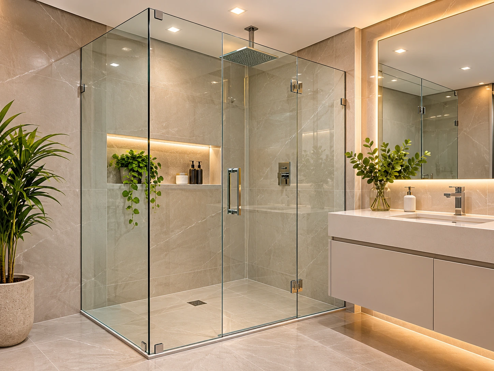
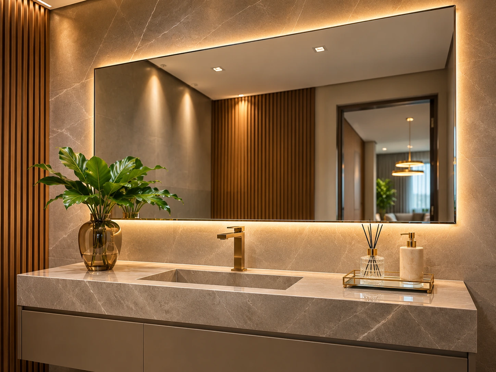
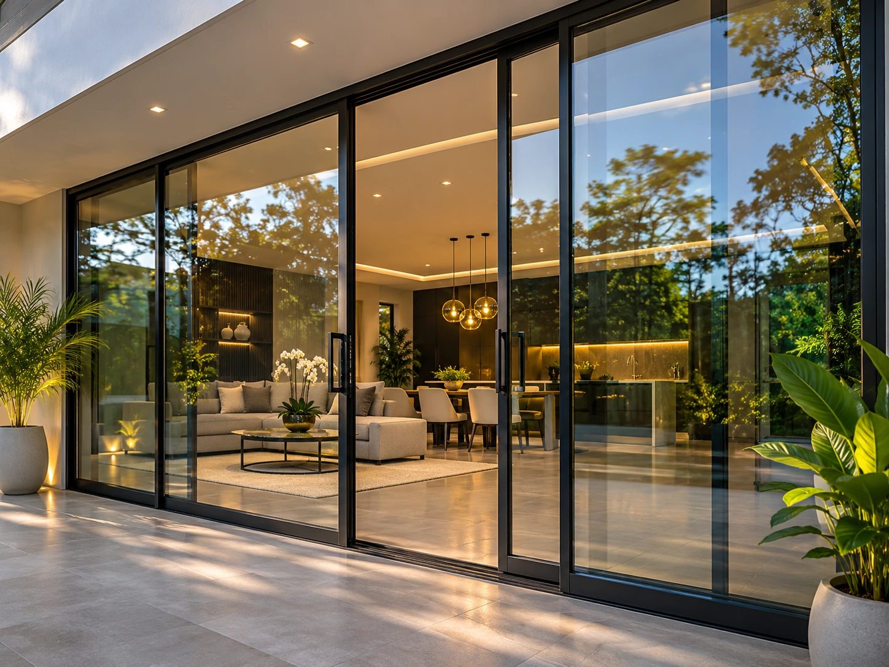

Transparência que valoriza seu espaço.
Projetos em vidro, espelhos e esquadrias que unem beleza, segurança e acabamento de qualidade para sua casa ou empresa.
Soluções em vidros e esquadrias
Para cada ambiente, a combinação certa de funcionalidade, segurança e estética.

01 / 06Box para banheiro
Sob medida para seu ambiente
02 / 06Espelhos sob medida
Elegância e amplitude
03 / 06Portas de vidro
Estilo e luminosidade 04 / 06
04 / 06Janelas e esquadrias
Conforto e praticidade 05 / 06
05 / 06Guarda-corpos
Proteção com vista livre 06 / 06
06 / 06Sacadas e fechamentos
Mais proteção para sua área
FAZEM A DIFERENÇA
Mais que vidro. Confiança em cada projeto.
A MSD Vidraçaria e Esquadria atua em Cascavel oferecendo soluções sob medida para ambientes residenciais e comerciais. Cada serviço é pensado para valorizar o espaço com praticidade, segurança e bom acabamento.
Da escolha do material à instalação, buscamos um atendimento próximo, transparente e dedicado ao resultado.
Como funciona?
Seu projeto começa com uma conversa e termina com o ambiente renovado.
Entre em contato
Fale pelo WhatsApp e nos conte o que você precisa.
Orçamento e medidas
Entendemos a necessidade e combinamos os detalhes do serviço.
Instalação e entrega
O serviço é executado com atenção à segurança e ao acabamento.
Ambientes que inspiram
Veja possibilidades de aplicação do vidro e das esquadrias em diferentes espaços.
Seu projeto merece um acabamento especial.
Envie uma mensagem e solicite seu orçamento sem compromisso.
A confiança de quem já conhece a MSD.
Opiniões públicas de clientes mostram a importância do capricho em cada atendimento.
Encontrar a MSD no Google“Ótimo trabalho, muito caprichoso e entrega rápida.”Elidiane O.Avaliação pública de cliente
“Pontual, muito caprichoso, serviço limpo, material de altíssima qualidade.”João DonartoAvaliação pública de cliente
Estamos em Cascavel - PR
Atendimento direto para tirar dúvidas e começar seu próximo projeto.
Rua Txikaos, 119 - Santa Cruz
Cascavel - PR, 85806-030
Segunda a sexta: 08h às 18h
Sábado: 08h às 12h